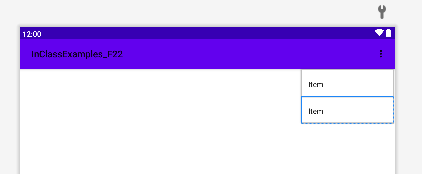
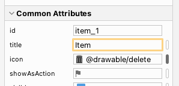
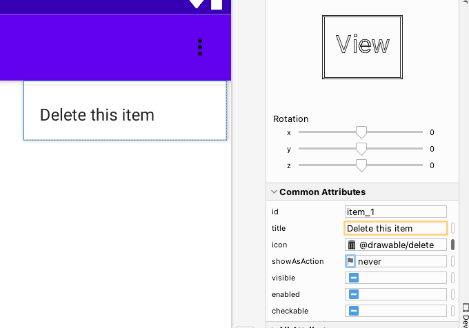

Toolbars are a place where you can put icons that are commonly used in your application. Android started. Android used to use a class called ActionBar, which is similar to Toolbar, however ActionBar can only be placed at the top of the screen. Toolbar is an improvement since it can be placed anywhere on the screen.
In order to use Toolbar, you must tell Android not to use ActionBar. This is done in the /res/values/themes.xml file. Add these two lines somewhere inside the <style> tags:
<item name="windowActionBar">false</item>
<item name="windowNoTitle">true</item>
Notice it sets a variable called "windowActionBar" to false. Next, go to your layout file and add a <Toolbar> tag and give it an id. You must always set the layout_width and layout_height parameters. Then in Java, you just call setSupportActionBar( ); and you must pass in your Toolbar object from the viewBinding:
setSupportActionBar(binding.myToolbar)
When you call setSupportActionBar(), Android will call a function called onCreateOptionsMenu(). In your ChatRoom.java class, hit "Ctrl+O" and select onCreateOptionsMenu from the list of functions to generate.
@Override
public boolean onCreateOptionsMenu(Menu menu) {
super.onCreateOptionsMenu(menu);
return true;
}
The point of this function is to load a Menu layout file. Notice that this function passes in a Menu object. This function should get a MenuInflater object to load an XML file. It's like the LayoutInflater that you used for the RecyclerView, only now it expect a menu file in the /res/menu folder.
getMenuInflater().inflate(R.menu.myMenu, menu);
This is the only line you have to add to the onCreateOptionsMenu() function.
Right-click on the "res" folder and select "new" -> "Android Resource File.". From the window that appears, select "Menu" as the resource type and give it a filename of "my_menu". You can actually choose whatever you want but you can only use lowercase letters or underscore. After, hit the "Ok" button. Then click "Add" to add the file to git tracking.
You should see a Menu editor, with a Code, Design, or Split view just like when you open a layout file.
Open the "Palette" window and drag a MenuItems onto the toolbar. 
If you look at the Attributes window on the right side, give the item an id, "item_1" for example. Then let's add a an icon to use as a picture for this menu item. Go to this website: https://icons8.com/icons/set/garbage. Next choose one of the garbage pail icons download, preferably size 96x96 pixels or near there. Once downloaded, rename the file to "delete.png".
Back to the menu item, set the "icon" parameter to @drawable/delete 
Set the title to "Delete this item". Now look at the Design tab, and set the "showAsAction" to always. Notice carefully that you see the garbage icon, and there's no title anywhere. If you set showAsAction="always", then the menu item shows up at the top using only the icon.
Now change showAsAction to "never": 
If the showAsAction is set to "never", your menu item shows on the "overflow" menu, which is a button with three vertical dots. You have to press the overflow button, and then you see all the menu items shown using the Title only and the icon isn't used anywhere.
You can add multiple Menu items to your application but you must decide if you want them to show up as an icon at the top of the page, or as text in the overflow menu. There's only space on your phone for about 3 icons so you must pick carefully. To make a menuitem appear as an icon, and no title, you set showAsAction="always". Otherwise set showAsAction="never" and your menuitem will appear in the overflow menu as a title, and no icon.
The last part is the "id" parameter of your menuitem. When the user clicks on a menuitem, Android will call a function called onOptionsItemSelected. Press "Ctrl+O" and implement the onOptionsItemSelected function in your ChatRoom activity.
Notice that the function takes a MenuItem parameter, which represents the MenuItem from the XML file that was just selected. This function can just be a switch() statement where you check which ID from the menuitems was just clicked, and do something in response. For this week, just take the ChatMessage deletion code that you commented out last week in the Fragments, and now place it in the case for "item_1". Make sure that the menuitem is set as showAsAction="always" so it will appear as the gargage can icon you downloaded:
@Override
public boolean onOptionsItemSelected(@NonNull MenuItem item) {
switch( item.getItemId() )
{
case R.id.item_1:
//put your ChatMessage deletion code here. If you select this item, you should show the alert dialog
//asking if the user wants to delete this message.
break;
}
return true;
}
And that's it for Toolbar in Android. You create a <Toolbar> element in the XML layout file, and then you load that element in Java. You then call setSupportActionBar() to load and initialize that toolbar with the onCreateOptionsMenu() function.
For the MenuItem tags in the Menu xml file, you should set the Title parameter if you want this item to appear in the overflow menu, or you should set the Icon parameter if you want this item to appear at the top Toolbar using an Image in your Drawables folder.
For both cases, you should set the id parameter so that you can check for that id in the onOptionsItemSelected function. This function should just be a switch() statement where you check the possible ids from your menu file.
For this week's lab, just add the Garbage can icon to the Toolbar so that the user can delete the selected ChatMessge that is currently being displayed in the DetailsFragment. Also, create a second menu item that appears in the overflow menu which has the Title of "About". Give it any id you want, but when the user selects this, you should show a toast saying "Version 1.0, created by YourName" but replace "YourName" with your actual name.
This week's lab is fairly short since you should spend your extra time working on the final project.
| Item | Marks |
|---|---|
| You have a garbage can icon in the Toolbar that asks the user if they want to delete the ChatMessage. | (1 mark) |
| You have an overflow menu item with a Title of "About" that shows an about Toast message | (1 mark) |